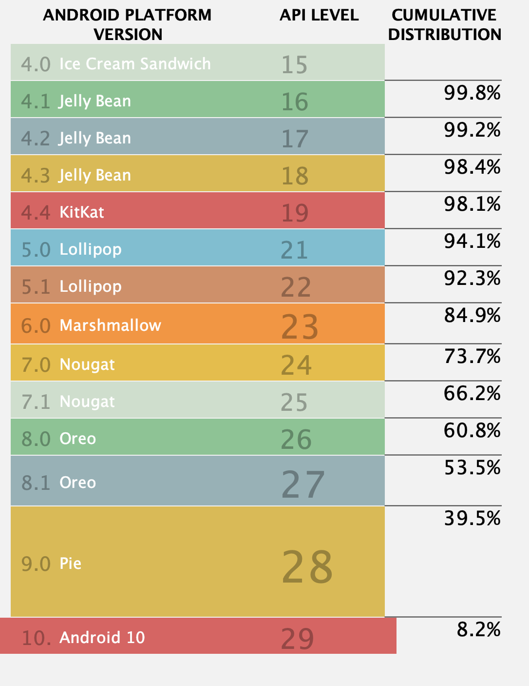
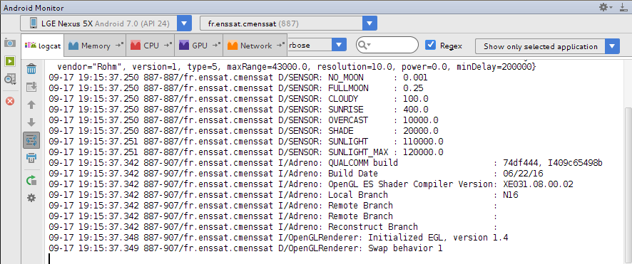

name: inverse layout: true class: center, middle, inverse --- # Android Introduction ENSSAT 2021-2022 Guillaume Châtelet --- layout:false ## plan - Historique - Applications mobiles - Android - Application Android - Développement Android - Déploiement Google --- template: inverse # Historique "Dis papa ! Quand tu étais petit, il y avait Minecraft sur ta tablette ?" --- ## 30 ans de téléphonie cellulaire - Initialement un terminal avec une fonction, téléphoner sans être attaché à une ligne fixe : - 1946 : premier service “mobile” - 1973 : premier “portable” (Motorola) - norme GSM : 1982 - SMS : possibilité d’échanger du texte (données) normalisé en 1985 en utilisant les canaux de contrôle. - Déploiement GSM : 1991/92. - WAP (1999 pour les terminaux) : possibilité d’accès à des sites donc des services. en parallèle utilisation de l’USSD pour des services simples (accès aux options de la ligne, à la consommation courante du forfait). - 3G : début années 2000 (UMTS - vidéo possible). - 4G : largement déployé (vidéo HD) - VoLTE, VoWifi - 5G : prochainement --- ## Évolution des terminaux - téléphone mobile - feature phone - java (avec jeux) - WAP premier internet mobile - smartphone : "une application pour tout" - l'arrivé de l'Iphone et de son Apple Store bouleverse l'écosystème - tablette : sur le point de remplacer les pc portables - pourquoi un pc quand votre tablette rend les mêmes services ? Mais aussi: - montre connectée - télévision connectée - voiture connectée --- ## Fonctionnalités et services de plus en plus étendues - voix - messages SMS - premier service USSD - WAP - Appareil photo - Internet 3G/4G - Musique : convergence Ipod - téléphone - GPS : Navigation - NFC : Paiement --- ## Évolution Le parc : - Évolution rapide dans le temps - des nouveaux terminaux arrivent tous les ans - Difficultés pour connaitre précisément le parc - taux de renouvellement des terminaux autour de trois ans Répartition : - Distincte suivant les régions du monde - Des marchés de taille et aux revenus inégaux - Les terminaux influent sur le type d'usage Pour les fournisseurs de service : - Bien comprendre l'évolution du marché - Faire des contenus adaptables aux terminaux --- template: inverse # Application mobile "Dis Papa ? Pourquoi c'est pas toi qui a codé Minecraft ?" --- ## Contraintes Focus : - Une (ou deux) application(s) en avant à la fois - passage d'une application à une autre difficile - Petit écran - voir très petit écran (montre connectée) - Interaction limitées et variées - touch screen - clavier physique - clavier tactile - reconnaissance de voix - écran capacitif : pression Performances : - Sauvegarder la batterie - Utiliser le réseau avec parcimonie - CPU et mémoire réduites --- ## Contraintes (suite) Usage nomade : - Condition d'utilisation et connectivité variable - Attention de l'utilisateur difficile à conserver - D'abord un outil pour téléphoner Sécurité : - Beaucoup de biens personnels - communications, emploi du temps, localisation, argent - D'autres acteurs ont des biens (assets) à protéger - téléphone perso / professionel, fournisseur de contenu - Difficulté à présenter les informations de sécurité (eg HTTPS) - qu'est ce qui est sécurisé ? - Facile à voler - gestion à distance => risques possible de piratage --- ## Contraintes architecturales L’architecture limite certaines fonctions : - la disponibilité du canal audio du GSM dans le processeur applicatif - l’accès à la SIM pour le processeur applicatif - Certaines ressources peuvent être partagées (DSP dans feature phones) - Héritage architecture GSM : certaines fonctions de haut niveau comme le carnet d’adresse sont partiellement gérées coté baseband. - Beaucoup de processeurs spécialisés : contraintes sur l’interface avec ceux-ci en particulier accès à la mémoire. - OpenGL dépendant en grande partie du processeur graphique. <center> </center> --- ## La fragmentation Une devise et un idéal : <i>Compile once, run everywhere</i> – SUN La fragmentation tout ce qui fait que ce n’est qu’une utopie. Incapacité à écrire un code unique qui s’adapte à tous les contextes opératoires, dans lesquels il peut être exécuté. Des origines diverses : - La diversité des ressources physiques : surtout graphique aujourd’hui. - Les différences dans les environnements de programmation. - Le contexte d’utilisation. --- ## 20% de dev - 80% de gestion de la fragmentation Le matériel - Performances CPU/taille mémoire. - Taille écran et dispositifs d’entrée. - Accélération graphique 2D/3D, codecs hardware. - Disponibilité de périphériques (bluetooth, GPS, photos). La diversité du logiciel : - La plate-forme hôte : APIs optionnelles, variations sur l’organisation de l’OS, codecs. - Dans la VM, les interprétations des normes, les bugs, les options laissés non spécifiés. Les choix propriétaires. - La localisation (langue, accessibilité, législation). Contexte de déploiement : - restrictions sur les ports, protocoles, - caractéristiques des passerelles, back-end de facturation. --- ## Combattre la fragmentation Plusieurs implémentations - En général une souche avec des options de compilation. - Un enfer de test et de gestion sur les portails. - Ex : MIDP - souvent 100 versions d’une application. Souche unique adaptable : - encouragé par Android JetPack. - Support de l’OS de plus en plus présent. - “Une taille pour tous” : - Étude de la cible (marché) pour une base technique commune. - Adaptabilité : - Adaptation du code au terminal. - Code abstrait spécialisé par l’OS (RenderScript, unités dp sp, etc.). - Utilisation de couche d’abstraction [AppCompat](https://developer.android.com/topic/libraries/support-library/packages#v7-appcompat). --- template: inverse # Encore un peu d'histoire "Dis Papa ! Quand tu étais petit, ta tablette c'était un Ipad ou un Android ?" --- ## 15 ans d’ouverture des téléphones ### MIDP - MIDP : profil Java CLDC (Connected Limited Device Configuration) pour mobile. CLDC est une machine virtuelle allégée. - Version 1 en 2000. Au départ une sandbox assez fermée. - Version 2 en 2002. Plus complet avec prise en compte de la sécurité. - D’autres spécifications complètent : MSA subset présent par exemple sur les séries 40 est sur certains points (APIs systèmes) plus complet qu’Android. - Fonctionne parfaitement sur un feature phone (ex : série 40 de Nokia) ou moins. - Déployé à plusieurs milliards d’exemplaires mais peu d’utilisateurs réels et d’applications. --- ## 15 ans d’ouverture des téléphones ### Symbian - Base : EPOC l’OS des PDA Psions (1990 environ). - Symbian est apparu vers 2001 (Nokia Communicator). - Programmation en C++ (héritage Psion parfois lourd). - Base des smartphones Nokia série 60 et d’autres constructeurs. - Domination du marché des smartphones jusque 2009/2010. - A disparu d’Europe et des US. --- ## 15 ans d’ouverture des téléphones ### Windows Mobile - Première version en 2000 - Utilise la base Windows CE - Au départ code natif, puis mélange natif et bytecode (.net) - Remplacé par Windows Phone 7 qui autorise seulement du code .net (machine virtuelle à la JVM) - Windows mobile a toujours prescrit une part importante de l’IHM (eg 320x240) - Windows Phone 7 prescrit complètement l’architecture matérielle - 2012 : apparition de Windows Phone 8. Faire le pont avec le PC - Diffusion en replis, mais en 2013 Microsoft rachete Nokia mobile --- ## 15 ans d'ouverture des téléphones ### Blackberry - Un smartphone pour le marché entreprise. - Une base Java CLDC mais pas MIDP (évolution ensuite vers un MIDP étendu). - Une intégration avec le courrier particulièrement poussée (push e-mail) utilisant des serveurs relais fournis par la marque. - Une consommation remarquablement faible. - Emphase sur la sécurité (cryptage, stockage dans le réseau). - Diffusion plutôt en replis. Évolution vers un webOS sur une base QNX. - 2013 : RIM annonce un replis vers le B2B. --- ## 15 ans d'ouverture des téléphones ### iPhone - Montré en janvier 2007. - Une plate-forme matérielle autant que logicielle (iOS). - iPod vu comme un téléphone sans modem. - Une version tablette depuis 2010. - Intégration verticale complète (du processeur au logiciel). - Un téléphone initialement fermé. - Un marché totalement contrôlé des applications. --- ## 15 ans d'ouverture des téléphones ### Android : Les origines - 1998- BlackBerry : OS propriétaire avec surcouche MIDP fortement intégrée au mobile. - 1999-2006 Savaje OS : OS totalement Java fondé sur JavaSE - rachat par Sun - (équipe JavaFX). - 2000-2008 DangerOS (Sidekick) : un autre OS Java sur JavaSE assez OSGI - Rachat par Microsoft - (équipe KIN). - 200x-2005 Android Inc. : OS base Linux et couche pseudo Java SE mais sans la lourdeur SE. ### Les débuts d’Android - Oct 2008 : HTC Dream : et premier téléphone Android. - Q3 2010 : premier OS de Smartphone aux US. --- ## 20 ans de guerre des OS mobiles en vidéo <br> <iframe width="810" height="456" src="https://www.youtube.com/embed/MMyMB4zm9so" frameborder="0" allow="accelerometer; autoplay; clipboard-write; encrypted-media; gyroscope; picture-in-picture" allowfullscreen></iframe> --- template: inverse # Android ## <center> <img src="img/Android_Robot_200.png" /> </center> --- ## Android ### En bref - Une société rachetée par Google. - Une plate-forme logicielle et non matérielle. - Un OS Linux et une couche middleware Java. - Un système complètement Open source en licence Apache. ### Plusieurs processeurs - ARM sous toutes variantes (Qualcom, NVidia Tegra, TI OMAP). - Intel (dont Atom). - MIPS (mais pas officiel). ### Divers matériels Téléphones, Tablettes, Netbooks (Intel et ARM), Lecteurs de livre (Nook), Lecteurs MP3 (Archos), Set-top-box (d’où le portage MIPS) --- ## Architecture <center> <img src="img/android-system-architecture.jpg" /> <center/> --- ## Architecture - Noyau Linux : - Modifié pour la gestion de l’énergie - Modifié pour les IPC : binder - Middleware bas niveau : - Des bibliothèques classiques (ex : sqlite). - Noyau de sécurité sur la notion de processus et utilisateurs : une application = un utilisateur et des IPC contrôlées. - Art pour remplacer Dalvik : - Des applications plus monolithiques qu’en Java classique (APK) - Les packages contiennent du bytecode propriétaire (dex) - Le bytecode est compilé par un compilateur natif JIT - Une VM par application issue d’une souche partagée - Un ensemble de services standard faisant la base de l’OS et s’exécutant souvent dans un groupe “system” qui accède au matériel. - Les services Google (Android market, gmail, maps). - Des applications tierces. --- ## Version ### .left-column[ <table border="2" cellPadding="4"> <tr><th>n° </th><th width="80%"> Nom </th><th>Sortie</th><th>Api </th></tr> <tr><td>1.0</td><td> </td><td>09/08 </td><td>1 </td></tr> <tr><td>1.1</td><td> Petit four </td><td>03/09 </td><td>2 </td></tr> <tr><td>1.5</td><td> Cupcake </td><td>04/09 </td><td>3 </td></tr> <tr><td>1.6</td><td> Donut </td><td>09/09 </td><td>4 </td></tr> <tr><td>2.0</td><td> Eclair </td><td>10/09 </td><td>7 </td></tr> <tr><td>2.1</td><td> Eclair </td><td>01/10 </td><td>7 </td></tr> <tr><td>2.2</td><td> Froyo </td><td>05/10 </td><td>8 </td></tr> <tr><td>2.3</td><td> Ginger B. </td><td>11/10 </td><td>9-10</td></tr> <tr><td>3.0</td><td> Honeycomb </td><td>02/11 </td><td>11 </td></tr> <tr><td>3.2</td><td> Honeycomb MR2 </td><td>07/11 </td><td>13 </td></tr> <tr><td>4.0</td><td> Ice Scream S. </td><td>10/11 </td><td>14-15</td></tr> </table> ] .right-column[ <table border="2" cellPadding="4"> <th>n° </th><th width="80%"> Nom </th><th>Sortie</th><th>Api </th></tr> <tr><td>4.1</td><td> Jelly bean </td><td>07/12 </td><td>16 </td></tr> <tr><td>4.2</td><td> Jelly bean MR1 </td><td>11/12 </td><td>17 </td></tr> <tr><td>4.3</td><td> Jelly bean MR2 </td><td>05/13 </td><td>18 </td></tr> <tr><td>4.4</td><td> Kitkat </td><td>11/13 </td><td>19-20</td></tr> <tr><td>5.0</td><td> Lolipop </td><td>10/14 </td><td>21-22</td></tr> <tr><td>6.0</td><td> MarshMallow </td><td>10/15 </td><td>23 </td></tr> <tr><td>7.0</td><td> Nougat </td><td>09/16 </td><td>24 </td></tr> <tr><td>8.0</td><td> Oreo </td><td>08/17 </td><td>26 </td></tr> <tr><td>8.1</td><td> Oreo </td><td>12/17 </td><td>27 </td></tr> <tr><td>9 </td><td> Pie </td><td>08/18 </td><td>28 </td></tr> <tr><td>10 </td><td> Android 10 </td><td>09/19 </td><td>29 </td></tr> <tr><td>11 </td><td> Android 11 </td><td>09/09 </td><td>30 </td></tr> </table> ] --- ## Évolution ### Spécificités - Les changements entre 1.6 et 2.x ont donné une impression de fragmentation. - Il est inutile de développer pour des versions < 2.1 - 2.2 apporte la rapidité (JIT) et Flash. - 2.3 apporte le support du NFC. - 3.x version pour les tablettes. Son code n’est pas open-source - 4.0 convergence tablette/téléphone - 4.x surtout une amélioration des performances - 5.0 Material design, Art au lieu de dalvick. - 6.0 gestion des permission, deep sleep, okHttp, api call - 7.0 multi fenetrage - 8.0 économisateur d'energie - 9.0 amélioration ergonomie (E2E screen, notifications) - 10.0 sécurisation des données privés utilisateurs - 11.0 conversation "centric", fédération des devices connectés Android Go : version pour device low-end --- ## Repartition des versions ([Sept 2020](https://developer.android.com/about/dashboards)) # <center>  </center> --- ## Open source ### Un seul maître à bord - Définition par Google - publication en Open source : licence Apache. - Open Handset Alliance : - groupe d’opérateurs et constructeurs soutenant l’OS. - Accord de non fragmentation. En pratique peu de divergences même si certaines spécialisations. - Accès privilégié aux sources. - Google définit chaque version seul et ne la publie qu’une fois finalisée. - Une plate-forme matérielle privilégiée par version. - Contributions externes possibles mais sur la base publique. ## Nouvauté 2017 : Partage du source en temps réel sur Github --- ## Une seule version officielle - La dernière : peu de patches sur les versions anciennes. - Même les patchs de sécurité ne sont pas backportés. - Incitation de Google à mettre à jour les firmwares avec la dernière version de l’OS : éviter la fragmentation. - Peu d’empressement des constructeurs/opérateurs à mettre à jour gratuitement des équipements anciens. - Conséquence : des risques avérés pour la sécurité des utilisateurs. - Android Update Alliance : accords pour avoir une propagation rapide des versions. --- template: inverse # Android Application "Dis papa ? Il y a quoi dans une application Android?" --- ## APK: Android PacKage - Fichier que l'on récupère du "Play Store" - Contient : - le code de l'application : Fichier Dex (plusieurs possible) - les ressources de l'application images, icônes - les traductions - la description de l'interface utilisateur - les données - le Manifest de l'application : sa fiche d'identité - Un Manifest décortiqué : "Minecraft" - son nom : "Minecraft" - l'icône pour le menu - son identifiant : "com.mojang.minecraftpe" - sa version : "0.15.0" - sa version de code : 23423 - la déclaration de ses composants - comment appeler ses composants - permissions demandées et créées par l'application - configuration minimale : niveau de sdk, fonctionnalité --- ## Les resources Pour contrer la fragmentation, les ressources sont adaptables suivant les cibles ### Cibles les plus courantes: - le langage du terminal : très utile pour les traductions un fichier de wording par défaut : souvent en anglais des fichiers de traductions par langage - la densité de l'écran : très utile pour les icônes Les icônes sont agrandie ou rétrécie par android à l'affichage mais l'effet n'est pas parfait Pas de SVG, mais depuis 4.4, il y a possibilité d'intégrer de asset vectoriel dans l'apk Mais aussi : orientation, taille de l'écran, version d'Android, opérateur, ... --- ## Les composants d'une application Android ### "Activity" : ce sont les pages de l'application - rôle : - charge les descriptions de l'interface utilisateur - décrit la navigation et les actions à faire quand l'utilisateur interagit avec l'application les Activity sont empilables les unes sur les autres, on peut les arrêter avec la touche "back" du téléphone. ### "Service" : ce sont les taches de fond de l'application - rôle : - exécute le code de longue durée dans l'application - typiquement : le composant qui joue la musique dans Deezer est un Service --- ## Les composants d'une application Android (2) ### "Broadcast receiver" : charger de recevoir les messages du système - rôle : - exécute le code en réaction à un stimuli du système - typiquement : boot du device, appel GSM ### "Content Provider" : charger de fournir aux autres applications des données - rôle : - fournir un accès aux données de l'application aux autres applications - typiquement : base de donnée de contact, de photo, call logs --- ## Manifest minimal ### <center> </center> --- ## Architecture Vue / Controleur / Objet .left-column[ ] .right-column[ ### Modèle 3 tiers - Architecture où on distingue 3 couches : - Couche présentation (l’IHM), - Couche application/métier, - Couche données. - La couche présentation est isolée de la couche donnée. ### Intérêt Modifier le code d’une couche, ajouter des sources de données ou de nouveaux services sans toucher aux autres. Le coût de la séparation inférieur au gain en réutilisabilité. ] --- ## Architecture d'une application Android --- ## Communication entre composants ### "Intent" Un intent est un message paramétré décrivant une opération à effectuer : - Il décrit principalement une action et des données. - Il est relativement court (utilisation d’URI pour les données complexes). - Les paramètres décrivent plus ou moins finement le destinataire : - définition explicite du receveur, - définition implicite par le contenu et l’action voulue . - Il est monodirectionnel. Mais il y a une notion d’appel avec résultat où on retourne un autre intent de manière asynchrone. - Restreindre les processus (application) émetteurs des intents que l’on reçoit ou les processus destinataires d’un broadcast est la base de l’architecture de sécurité. Exemple - Lancer l'activité principale d'une application - Envoyer un message texte - Appeler un contact - Prendre ou choisir une photo - Play/Pause sur un player --- ## Résolution de l'Intent ### Le système se charge de trouver l'application qui répondra à l'Intent En cas de multiple possibilités, il demande à l'utilisateur quelle application il veut lancer pour répondre à l'Intent <center> <img width="40%" src="img/Intent-choice.png" /> </center> Le système va créer le composant choisi et lui passe l'Intent. <img style="float" width="10%" src="img/android-danger-sign.jpg"/>.warning[ Il y a plusieurs points d'entrée dans une application Android] --- template: inverse # Le développement "Dis papa ! Comment tu fais quand tu codes" --- ## Les sites incontournables - https://android.com : portail principal pour les utilisateurs et développeurs. - https://developer.android.com : le site des développeurs. - Accès au SDK. - Accès aux guides de programmation. - Accès au JavaDoc des APIs des différentes versions. - https://source.android.com : le code de l’OS (sous git). - https://play.android.com : vente des applications. <center> </center> --- ## Android Studio IDE poussé par Android, sur une base InteliJ (Eclipse est hors course) Très bonne intégration du SDK Android <center> <img src="img/android-studio.png" /> </center> .center[https://developer.android.com/studio/index.html#downloads] --- ## Gradle : script de build : plugin Android Gradle est un outil de build basé sur le langage Groovy gère les dépendances du projet: - en utilisant des dépôts Maven - sous projets Le plugin Android permet de créer des APK: - Release/Debug build type : pour intégrer ou non le code de debug - Flavour : permet de différencier des builds : branding, gratuit/payant - Test : permet de lancer des tests Junit Intégration dans Studio mais aussi ligne de commande: .remark-code[./gradlew assemble] - pour debug - build sur les serveurs d'integration (Jenkins) Android studio crée pour vous un script gradle minimal pour votre projet --- ## Émulateurs ou Terminaux de développement ### Tous les terminaux Android peuvent passer en mode développement - clicker 10 fois sur le numéro de build dans les paramètres "Etat du téléphone" pour passer en mode développeur. - permet de tester sur des téléphone réel (fragmentation) ### Émulateur - basé sur une émulation du hardware - se comporte comme un vrai terminal - des images pour émuler Intel x86 et arm - toutes les versions d'Android (mais pas de fragmentation) - pas de SIM, pas de problème réseau --- ## Débogage ### Logcat : permet de lire les log généré par l'application .remark-code[Log.d(TAG, "This is a log, you can read me using logcat");] différent niveau de log : - .remark-code[Log.v] : verbose, .remark-code[Log.d] : debug, .remark-code[Log.i] : info, .remark-code[Log.w] : warning, .remark-code[Log.e] : error permet aussi d'afficher les "stack trace" des .remark-code[Exception] Bonne pratique : .green[Toujours afficher les traces des exceptions dans les .remark-code[try catch]] ### Débogage pas à pas dans studio il est possible de lancer l'application en mode pas à pas: - définir des break points dans le code - lancer le debug - avancer pas à pas Permet de vérifier l'état des variables en cours d'exécution --- ## Outil de monitoring de l'application Logcat : lien direct entre les stack trace des exceptions et le code  Mémoire, cpu, gpu, réseau : .green[N'oubliez pas que votre application tourne sur un téléphone] --- ## Outil d'édition de layout Souvent fastidieux à la main, plus rapide pour créer les grande ligne --- ## Outil d'édition de layout Dans les faits, .green[on fini toujours par éditer le XML à la main] --- ## Tests unitaire poussé dans Jetpack : [Test](https://developer.android.com/training/testing/) Code pour tester l'application en boîte blanche (accès aux données du code sous test) ### Junit Test Pour tester les classes sans dépendances à Android (code métier) ### Android Junit Test Pour tester les interfaces utilisateurs : Instrumentation de l'application Nécessite un device (ou émulateur) #### Outils - Espresso - Mock des composants android --- ## D'autres Outils ### ADB ligne de commande pour le debug des terminaux C'est ce qu'utilise Studio pour piloter les téléphones ### Android monitor permet de visionner les heap du terminal, introspecter l'écran, introspecter le temps passer dans chaque méthode, etc... ### Monkey outil qui flood l'application avec des actions utilisateur (click, slide) ### UI Automator permet de scripter des actions utilisateurs pour faire du test automatique --- template: inverse # Le déploiement "Dis Papa, comment on met une appli sur le store ?" --- ## La console développeur La console permet de gérer les application sur Google Play --- ## La console développeur - gestion des version Déployer, enregistrer et conserver des versions --- ## La console développeur - gestion des version Plusieurs versions peuvent être en production en même temps --- ## La console développeur - détail d'une application Titre et description --- ## La console développeur - détail d'une application capture d'écran et icônes --- ## La console développeur - détail d'une application etc --- ## La console développeur - les tarifs par pays --- ## La console développeur - statistiques usage de votre application --- ## La console développeur - retour des utilisateurs notes et commentaires --- ## La console développeur - retour des utilisateurs Plantages et Application Not Responding (ANR) --- template: inverse # Merci